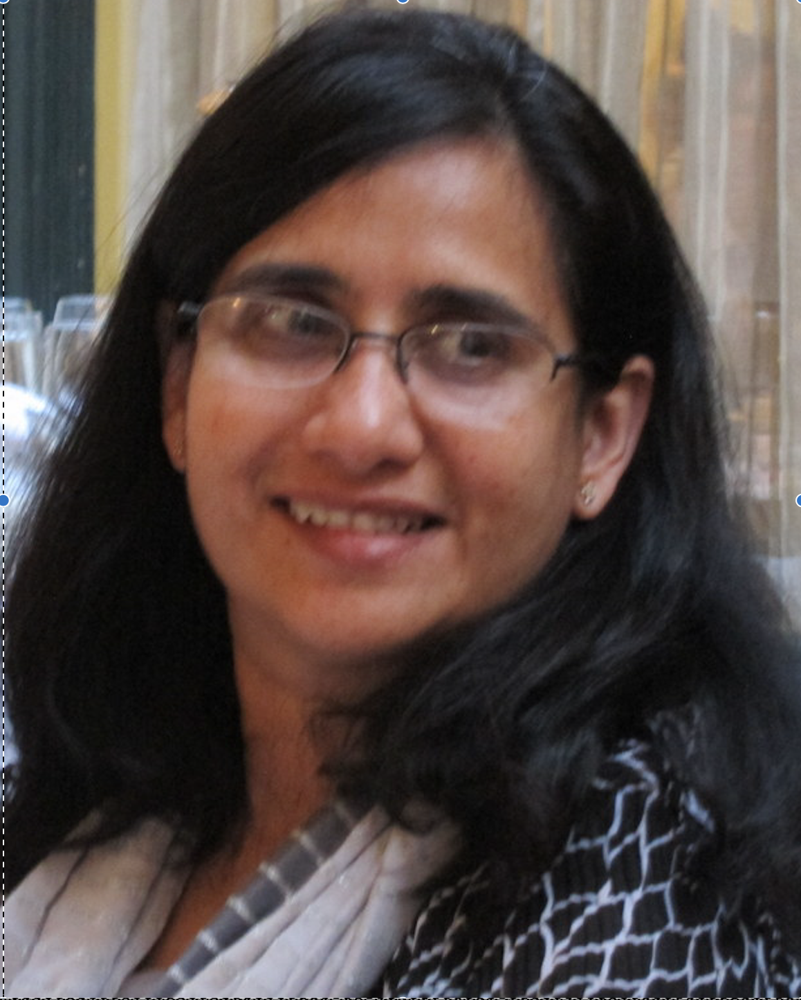

Sujata Banerjee

Sujata Banerjee is a senior staff researcher with responsibility as a research
director for VMware external research programs. Her expertise is in topics
related to software defined networking and network functions
virtualization, and she is broadly interested in network automation
and performance. Prior to joining VMware in January 2017, she was a
distinguished technologist and research director at Hewlett Packard
Enterprise Labs, leading a network systems research group which
conducted research on enterprise, service provider and datacenter
networks. Before HP Labs, she also enjoyed an academic career at the University of
Pittsburgh, where she was an associate professor in the Informatics
and Networked Systems department in the School of Computing and Information.
She received the Ph.D. degree from the University of Southern California (USC) and the
B.Tech. and M.Tech. degrees from the Indian Institute of Technology
(IIT) Bombay in Electrical Engineering. She holds 28 US patents with
another 20 pending, and is
a recipient of the U.S. National Science Foundation (NSF) CAREER award
in networking research and has co-authored over 100 peer reviewed
publications with two best paper awards. She also serves on
the Corporate Advisory Board of the USC Viterbi School of
Engineering. She has been acive in the networking research community
with recent technical leadership positions as the technical co-chair of the 2018 USENIX
Networked Systems Design and Implementation (NSDI) and the 2017 ACM Symposium on SDN Research
(SOSR) conferences.
Recent Professional Activities
Full list here
- Technical Program co-chair
- 2018 USENIX NSDI
- 2017 ACM SOSR
- General Chair: 2017 ACM HotNets
- Panels co-chair: 2018 IEEE COMSNETS
- 2017 ACM SIGCOMM Rising Star Award Committee
- Technical Program Committee Member
- 2018: ACM SIGCOMM
- 2017: IEEE ICNP, ACM SIGCOMM, ACM CoNEXT, ACM HotNets, ACM APNet,
- 2016: IEEE INFOCOM (Area Chair), IEEE ICNP (Area Chair), USENIX
NSDI, USENIX OSDI, ACM SIGCOMM, ACM CoNEXT
- 2015: IEEE INFOCOM (Area Chair), IEEE ICNP (Area Chair), ACM
SIGCOMM, ACM MobiCom
Recent Publications
Full list here